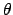
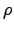
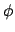

A few items about some of the plots functions.
L. F. Rossi
In addition to the features described in your ``Maple Tutorial'' for this class, there are two functions of special interest to you in the plots package.
The cylinderplot function will plot surfaces in cylindrical coordinates. If you provide a single function, it is assumed that the function represents the distance from the z-axis, r, as a function of

and z. Thus,cylinderplot(3,theta=0..2*Pi,z=-6..6);will render a cylinder of radius 3, and
cylinderplot(3+cos(4*theta),theta=0..2*Pi,z=-6..6);will render a bumpy cylinder.
However, if you provide a list of three functions, it will treat them as a parametric surface, similar to plot3d parametric capabilities.
The sphereplot function will plot surfaces in spherical coordinates. If you provide a single function, it is assumed that the function represents the distance from the origin

as a function of and
. Thus,sphereplot(3,theta=0..2*Pi,phi=0..Pi);will render a sphere of radius 3, and
sphereplot(3+cos(theta)*sin(6*phi),theta=0..2*Pi,phi=0..Pi);will render a spiny sphere, but you may have to increase numpoints.
However, if you provide a list of three functions, it will treat them as a parametric surface, similar to plot3d parametric capabilities.